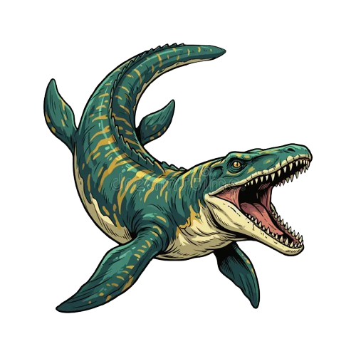

Ankylosaurus
Ankylosaurus Triceratops
Triceratops Chirostenotes
Chirostenotes Ornithopod
Ornithopod
Marine Reptiles Pachycephalosaurus
Pachycephalosaurus Pterosaur
Pterosaur Sauropod
Sauropod Therizinosaurus
Therizinosaurus Theropod
TheropodTen major groups, one gallery. Click any specimen to view it full size.
AnkylosaurusTriceratopsChirostenotesOrnithopod
Marine ReptilesPachycephalosaurusPterosaurSauropodTherizinosaurusTheropod